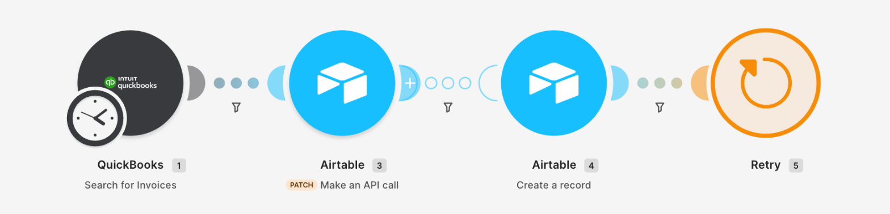
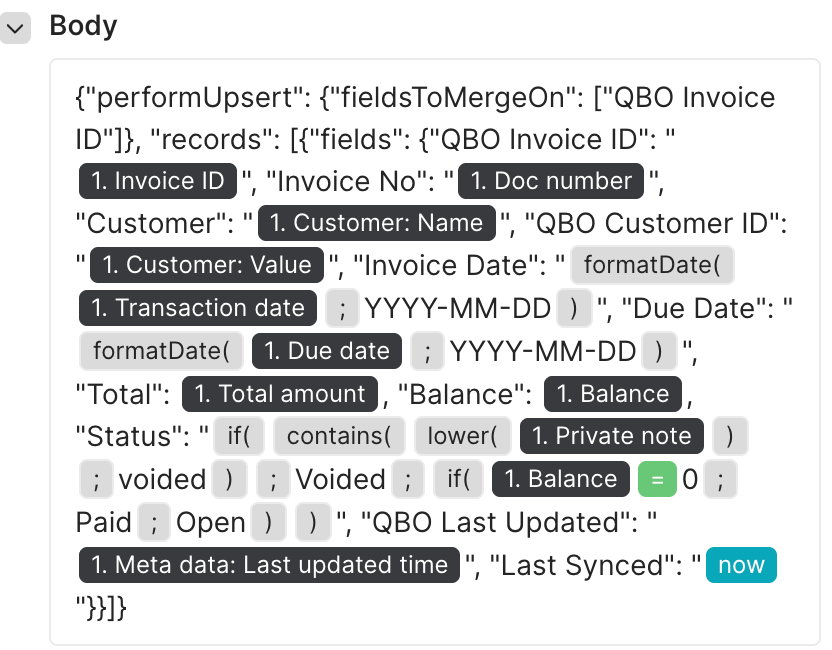
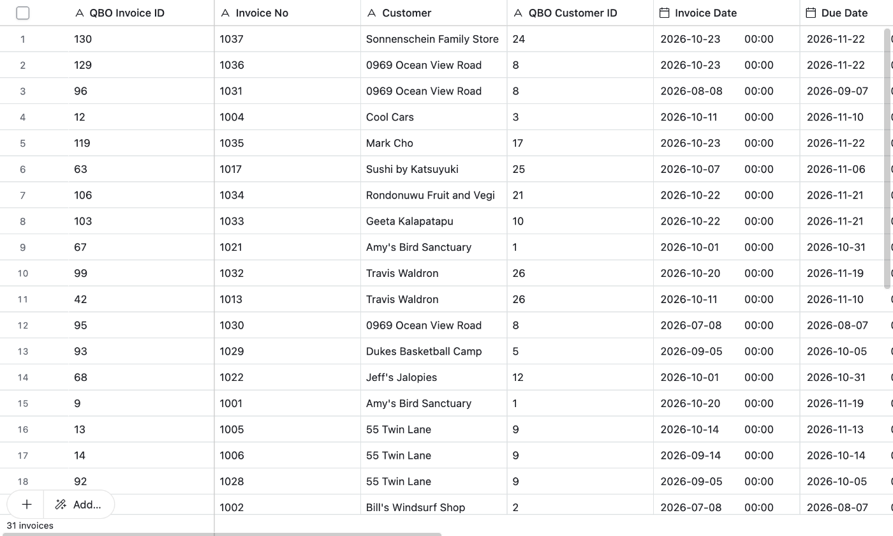
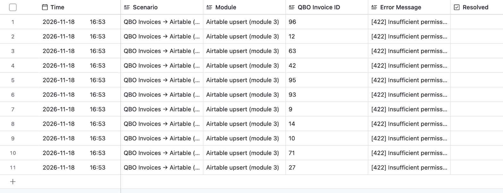
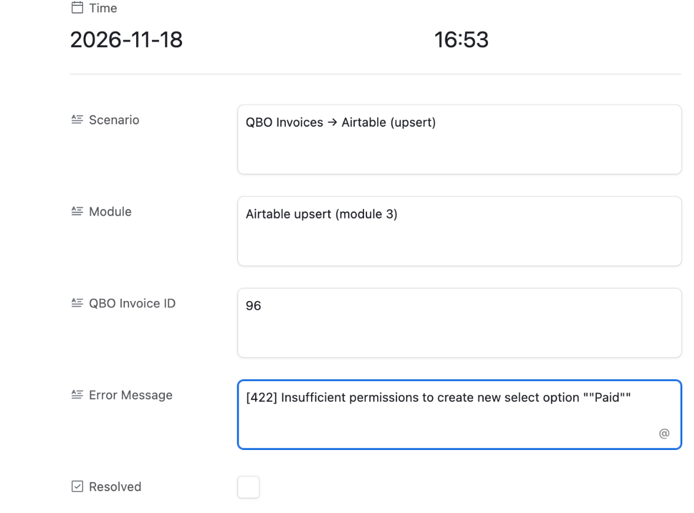
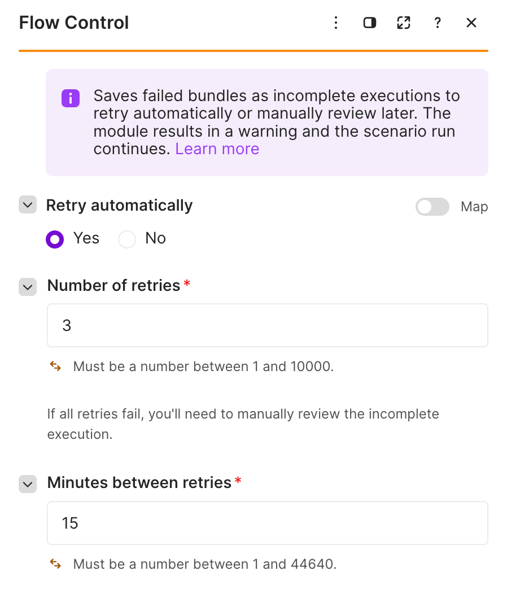
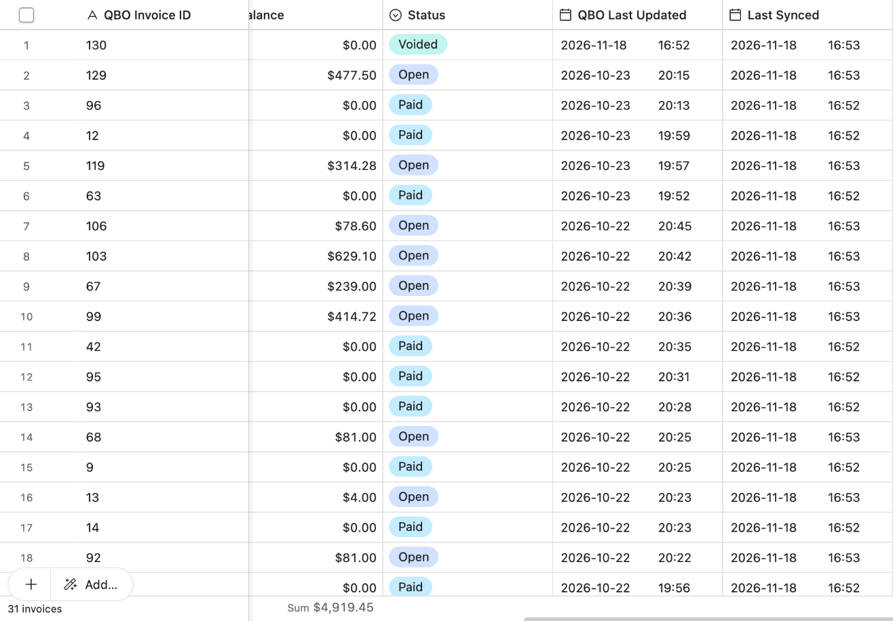
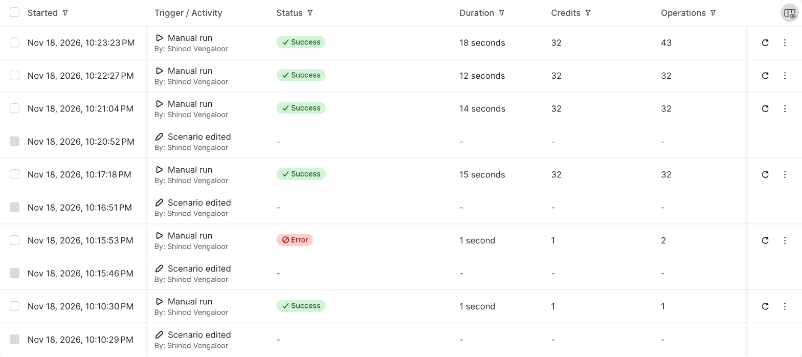

Work sample by Shinod Vengaloor, bookkeeper and automation builder
QuickBooks to Airtable invoice sync, built in Make
A demo I built to show my approach to three things that break accounting automations: duplicate records, failed writes and voided invoices.
All data is from a QuickBooks sandbox test company and a test Airtable base. The customer names are Intuit's sample data, and no client's books are shown.

What I tested
| Test | What I did | Result |
|---|---|---|
| First run | Ran the sync into an empty Invoices table. | 31 invoices created. Balances matched QuickBooks. |
| Second run | Ran it again with no changes. | Still 31 rows, no duplicates. |
| Voided invoice | Voided invoice 1037 in QuickBooks and ran the sync. | Same row updated to Voided with a $0.00 balance. |
| Broken write | Removed the "Paid" status option so some writes would fail. | 11 writes failed. All 11 were logged and stored for retry, and the other invoices still synced. |
Matching records without duplicates
Each invoice is matched on its QuickBooks internal ID. Customer names can change and invoice numbers can be edited or repeated, so neither is safe as a key.
Make sends Airtable an update-or-create request with fieldsToMergeOn: ["QBO Invoice ID"]. Airtable updates the row when the ID exists and creates one when it doesn't.


Handling failed writes
- The failure is logged with the time, module, invoice ID and exact error message.
- The failed record is stored in Make and set to retry 3 times, 15 minutes apart.
- The run carries on with the remaining invoices.



Voided and deleted invoices
A voided invoice still exists in QuickBooks with a zero balance, so the normal sync picks it up. I keep the row and mark it Voided so the history and linked records stay intact.

A deleted invoice disappears from normal searches. The demo doesn't include deletes. For live use I would add QuickBooks Change Data Capture or webhooks and mark the row "Deleted in QBO".
Before going live
- Read only invoices changed since the last run, after one full backfill.
- Add deleted-invoice tracking.
- Send an email or Slack alert when a write fails.
- Build and test on a copy of the Airtable base first.

Other automation work
- n8n maintenance tickets: each new ticket sends a Telegram group message and an email, and feeds a dashboard of pending items and reminders.
- Payment scheduler: automatic payment scheduling with the Cloudbeds API and Google Apps Script.
- QuickBooks Online: cleanup and reconciliation work, including categorising about 16,600 transactions for one client.